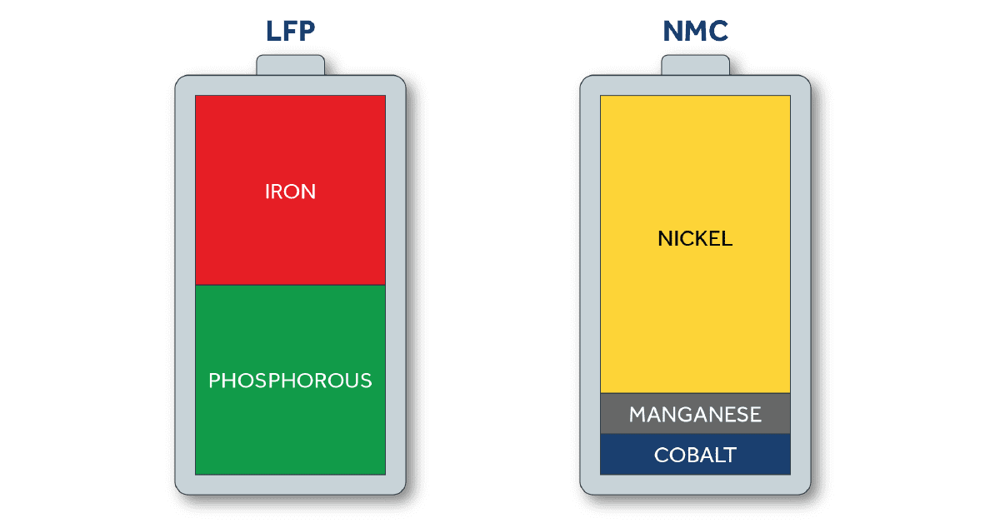
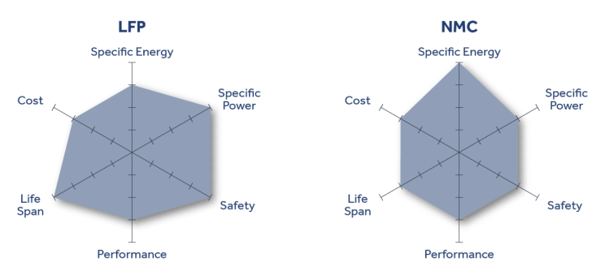
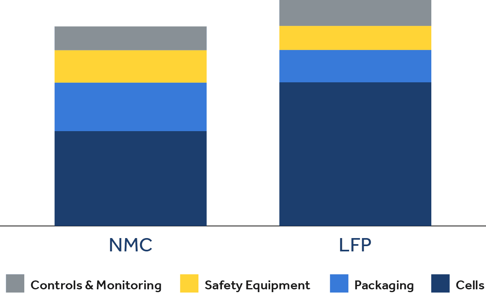
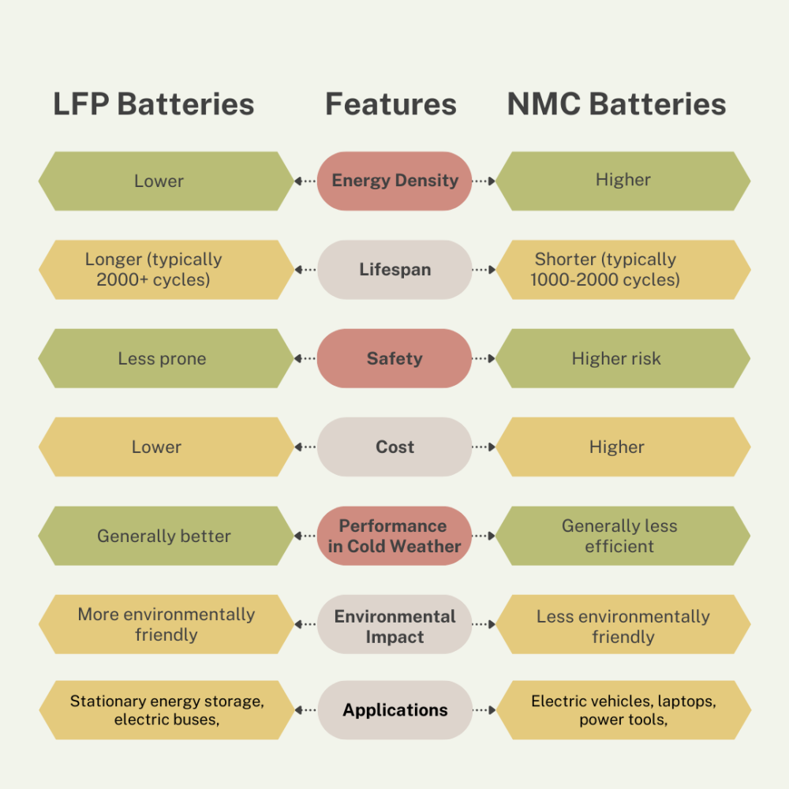

As the demand for electric vehicles (EVs) and energy storage solutions continues to rise, understanding the distinctions between Lithium Iron Phosphate (LFP) and Nickel Manganese Cobalt (NMC) batteries has become increasingly important.
How does an LFP battery differ from an NMC battery?
This newsletter delves into the key differences, advantages, and applications of these two battery technologies.
What Are LFP and NMC Batteries?
LFP batteries use lithium iron phosphate as their cathode material. They are known for their high safety, long cycle life, and stability. They are commonly used in electric buses, energy storage systems, and industrial applications.
NMC batteries contain a mix of nickel, manganese, and cobalt. They are favored for their higher energy density and fast charging capabilities. These batteries are commonly used in electric cars, consumer electronics, and high-performance applications.
LFP Battery Composition
LFP batteries are another variant of lithium-ion batteries that employ roughly equal amounts of iron and phosphate within the cathode. The materials that make up LFP batteries are more abundant, cheaper, and less toxic (so easier to recycle) than those in NMC. LFP batteries are commonly used in stationary energy storage and are under consideration for other markets as well, such as electric vehicles.

NMC Battery Composition
NMC batteries are a type of lithium-ion battery with a cathode composed of nickel, manganese, and cobalt. Nickel is the primary source of energy storage with high specific energy, but it needs manganese and cobalt to stabilize and provide the desired power output. These batteries are comprised of a ratio of material of 8:1:1 (8 parts nickel, 1 part manganese, 1 part cobalt) to minimize the use of Cobalt, which is expensive and difficult to procure. NMC batteries are all around us and are most commonly used in smartphones, laptops, and electric vehicles.
Comparing NMC vs. LFP
Now that we have outlined the basics of each battery chemistry, let’s compare their performance and use case for stationary energy storage systems in the commercial and industrial (C&I) sectors.

Energy Density
- NMC batteries have a higher energy density (150-220 Wh/kg) compared to LFP (90-160 Wh/kg), making them ideal for applications where space and weight are a concern.
- LFP batteries have lower energy density, but they compensate with longer life cycles and better safety.

Cycle Life and Durability
- LFP: Known for longer cycle life, often exceeding 2000 cycles, with some estimates suggesting up to 6000 cycles under optimal conditions. This longevity makes LFP batteries ideal for applications requiring frequent charging and discharging.
- NMC: Generally has a cycle life ranging from 800 to 2000 cycles, which is still substantial but not as enduring as LFP.
Safety and Thermal Stability
- LFP: Exhibits superior thermal stability with a thermal runaway point at approximately 518°F (270°C), significantly reducing the risk of overheating and fire.
- NMC: While generally safe, NMC batteries have a lower thermal runaway threshold at around 410°F (210°C), necessitating careful thermal management.
Cost Comparison: Which One Is More Affordable?
- LFP: Typically more cost-effective due to the abundance of iron and phosphate materials. The price per cycle is about one-third that of NMC batteries, making them a more economical choice over time despite their higher upfront size.
- NMC: Although they may have a higher initial cost due to nickel and cobalt content, their compact design can be beneficial in specific applications where space is limited.
Environmental Impact
- LFP: Considered more environmentally friendly as they do not contain toxic materials like cobalt, which poses ethical sourcing concerns and environmental hazards during extraction.
- NMC: The use of cobalt and nickel raises environmental concerns, making LFP a more sustainable option in the long run.
Which Battery is Right for You?
Lithium Iron Phosphate (LFP) and Nickel Manganese Cobalt (NMC) batteries are two prominent lithium-ion battery technologies, each with its unique set of characteristics and advantages. LFP batteries are known for their safety and long cycle life, making them suitable for stationary energy storage and electric buses. NMC batteries, on the other hand, offer high energy density, making them a preferred choice for electric vehicles and consumer electronics.

The choice between LFP and NMC batteries ultimately depends on the specific needs of the application, including safety, energy density, cost, and environmental considerations. As the energy storage landscape continues to evolve, ongoing research and development are likely to lead to improvements in both battery types, addressing their respective limitations and expanding their range of applications. In the quest for a sustainable energy future, the choice between these two battery chemistries plays a crucial role in shaping our journey toward cleaner and more efficient energy solutions.
Conclusion
As technology advances, the debate between LFP and NMC will continue to evolve, with ongoing research aimed at bridging the gaps in energy density while maintaining safety and cost-effectiveness. The battery landscape is dynamic, and exciting advancements are on the horizon.